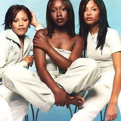

702 is an American musical girl group whose most notable line-up consisted of Misha Grinstead, Irish Grinstead, and Meelah Williams. The group began their musical career as Sweeter than Sugar, formed in 1993 in Las Vegas. After years of limited success, the original quartet comprising Misha Grinstead, Irish Grinstead, Orish Grinstead, and Amelia Cruz were signed in 1995 to Biv 10 Records as 702.
Complete Discography & Tracklists (7)